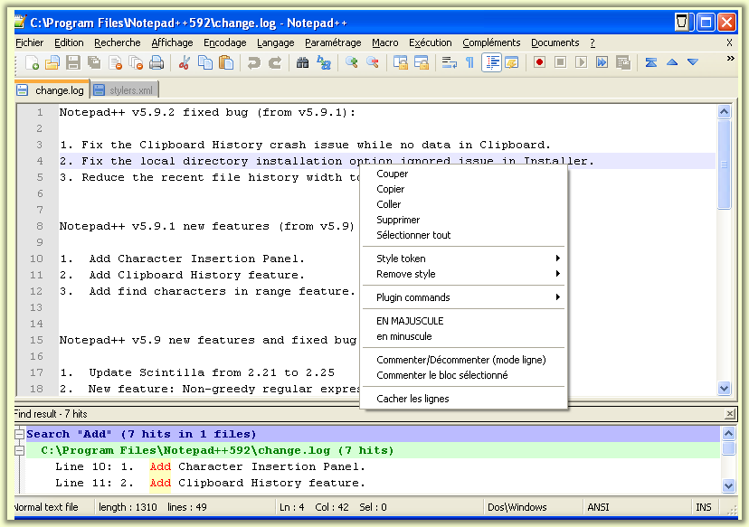

| Précédent: La fenêtre des documents | Table des matières | Suivant: Déplacement entre plusieurs documents |
La Fenêtre principale de Notepad++ se compose d'un certain nombre d'éléments d'interface graphique. Cette section va
essayez de les passer en revue. Leur nom s'affiche sous forme d'info-bulle quand la souris survole les zones cliquables :

Barre d'onglets
Barre d'état
Barre d'outils
Menu
Menu contextuel
Fenêtre Ancrable